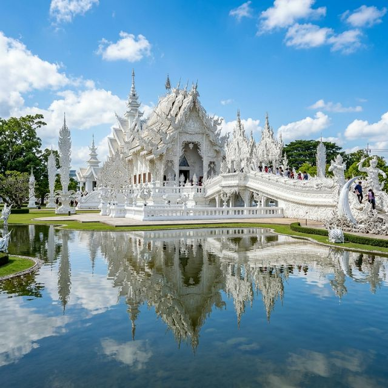
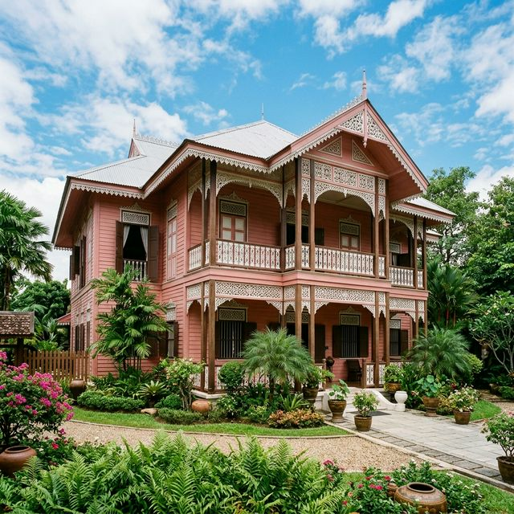
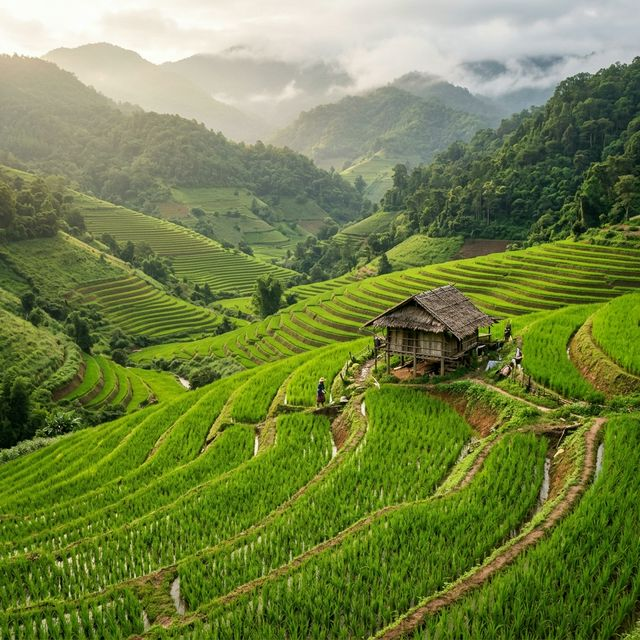
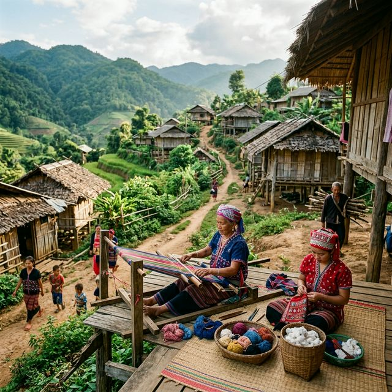

สัมผัสความงดงามของธรรมชาติ วัฒนธรรมล้านนาอันเก่าแก่ อาหารเหนือรสเลิศ และอากาศเย็นสบายท่ามกลางขุนเขาที่รอคุณมาค้นพบ
ในภาคเหนือ
สถานที่ท่องเที่ยว
วัดและโบราณสถาน
ภาคเหนือของประเทศไทยเป็นดินแดนที่เปี่ยมไปด้วยมนต์เสน่ห์ของธรรมชาติอัน งดงาม ขุนเขาสูงตระหง่าน ป่าไม้เขียวชอุ่ม น้ำตกที่สวยงาม ผสมผสานกับวัฒนธรรมล้านนาที่เก่าแก่กว่า 700 ปี
ตั้งแต่วัดวาอารามอันวิจิตร อาหารพื้นเมืองรสชาติเป็นเอกลักษณ์ ไปจนถึงวิถีชีวิตที่เรียบง่ายแต่อบอุ่น ภาคเหนือพร้อมต้อนรับ ทุกคนด้วยรอยยิ้มและอ้อมกอดของขุนเขา
อุทยานแห่งชาติกว่า 20 แห่ง
มรดกล้านนากว่า 700 ปี
อาหารเหนือรสเลิศมากมาย
ความหลากหลายทางชาติพันธุ์
สถานที่ท่องเที่ยวยอดนิยมที่คุณไม่ควรพลาดเมื่อมาเยือนภาคเหนือ
เมืองหลวงแห่งล้านนา ดอยสุเทพ เมืองเก่า ไนท์บาซาร์ สัมผัสวิถีชีวิตสุดคลาสสิกของภาคเหนือ
อ่านเพิ่มเติม
มหัศจรรย์วัดร่องขุ่น (วัดขาว) บ้านดำ วัดร่องเสือเต้น ดอยตุง ไร่ชาสิงห์ปาร์ค ดินแดนสามเหลี่ยมทองคำ
อ่านเพิ่มเติมเมืองรถม้า วัดพระธาตุลำปางหลวง กาดกองต้า แหล่งเซรามิกชื่อดัง สุดคลาสสิกของดีเมืองเหนือ
อ่านเพิ่มเติมวัดภูมินทร์กับจิตรกรรม "กระซิบรัก" ดอยเสมอดาว บ่อเกลือ เมืองเงียบสงบที่เต็มไปด้วยเสน่ห์
อ่านเพิ่มเติม
บ้านไม้บ้านวงศ์บุรี คุ้มเจ้าหลวง แพะเมืองผี เมืองแห่งบ้านไม้สักสุดงดงาม ผ้าหม้อห้อมอันลือชื่อ
อ่านเพิ่มเติมวัดพระธาตุหริภุญชัย เมืองเก่าหริภุญไชย ต้นยางนาพันปี อุโมงค์ต้นยาง สวนลำไยอร่อยที่สุด
อ่านเพิ่มเติมวัฒนธรรมอันรุ่มรวยที่สืบทอดมายาวนานกว่า 700 ปี
ซึง สะล้อ ปี่ เครื่องดนตรีล้านนาที่มีเอกลักษณ์เฉพาะตัว สะท้อนวิถีชีวิตของชาวเหนือ
ร่มบ่อสร้าง ผ้าทอมือ เครื่องเงิน เครื่องเขิน งานฝีมือสุดวิจิตรจากภูมิปัญญาชาวบ้าน
ข้าวซอย แกงฮังเล น้ำพริกอ่อง ไส้อั่ว ขนมจีนน้ำเงี้ยว อาหารที่ทำให้หลงรัก
ยี่เป็ง ลอยกระทง สงกรานต์ล้านนา ปอยหลวง ประเพณีที่มีสีสันและความมีชีวิตชีวา
บันทึกความทรงจำจากดินแดนล้านนา


สนใจท่องเที่ยวภาคเหนือ? ติดต่อเราได้เลย
พร้อมให้บริการข้อมูลท่องเที่ยวภาคเหนือ
การท่องเที่ยวแห่งประเทศไทย
สำนักงานภาคเหนือ เชียงใหม่
053-248-604
info@northernthai-tourism.com
จันทร์ - ศุกร์: 08:30 - 16:30 น.